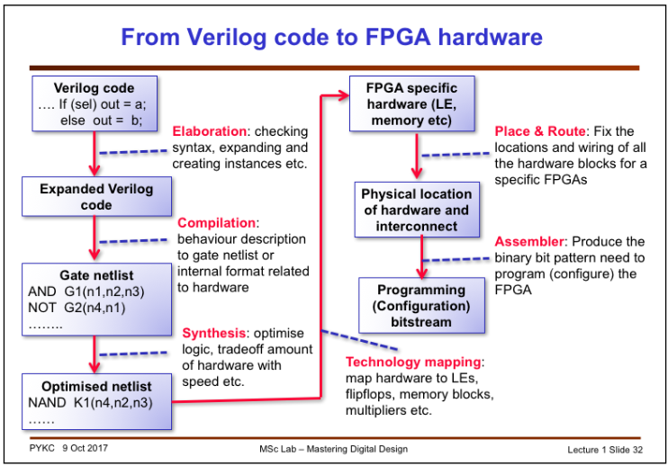

Compiling and Verification in Quartus Prime
ece5760 Cornell
The compilation process which starts with Verilog and ends with hardware configured on the FPGA is a multistep process. Before starting with the Quartus compiler, it is always a good idea to simulate the code as much as possible (Can't do VGA for example) using ModelSim software.
The following image [Imperial College lecture silde 32] shows the steps in compilation.
For another flowchart and specific Quartus useage, see Quartus doc.

Process for a small example
- Analysis/Synthesis
- Analysis/Elaboration
- Analysis stage of Analysis & Synthesis examines the logical completeness and consistency of the project, and checks for boundary connectivity and syntax errors.
- Analysis & Synthesis also synthesizes and performs technology mapping on the logic in the design entity or project’s files. It infers flip flops, latches, and state machines from Verilog HDL and VHDL. It creates state assignments for state machines and makes choices that minimize resources usage. (example: Verilog counter, Quartus generated RTL viewer)
- Analysis & Synthesis uses algorithms to minimize gate count, remove redundant logic, and use the device architecture (e.g. DSP blocks and memory blocks) as efficiently as possible. You can customize synthesis by using synthesis directives (scroll past table for details), for instance to force use of logic or memory blocks.
- Analysis & Synthesis also applies logic synthesis techniques (prune states, minimize, factor) to help implement timing requirements for a project and optimize the design to meet these requirements
- Partition Merge -- Quartus allows parts of the design to be fixed, while other parts are recompiled. In the standard incremental compilation design flow, the top-level design is divided into design partitions, which can be compiled and optimized together in the top-level Intel Quartus Prime project. You can preserve fitting results and performance for completed partitions while other parts of the design are changing, which reduces the compilation times for each design iteration. To take advantage of incremental compilation, start by splitting your design along any of its hierarchical boundaries into design blocks to be compiled incrementally, and set each block as a design partition. The Intel Quartus Prime software synthesizes each individual hierarchical design partition separately, and then merges the partitions into a complete netlist for subsequent stages of the compilation flow. When recompiling your design, you can use source code, post-synthesis results, or post-fitting results to preserve satisfactory results for each partition.
- Fitter (Place and route)
- The Fitter matches the logic and timing requirements of the project with the available resources of the target device. It assigns each logic function to the best logic cell location for routing and timing, and selects appropriate interc onnection paths and pin assignments.
- The Post-fitter viewer shows the tiny example counter as a series of flipflops and adders.
- zoomed in on the counter input. Note that the mux is gone because the compiler recognized that loading a zero into the register is equivalent to a D-flop clear signal, which is supported by the ALM.
- zoomed again on the output. Only the first 31 bits of the 40-bit counter were actually built, because the higher bits were not used for output.
- The fitter summary report indicates that 31 registers were used in 16 ALMs, plus one ALM which seems to be only ground.
- The Fitter must iterate until timing meets constraints. (ACM paper: Several industrial FPGA routing architectures have been shown to have no efficient routing algorithms (unless P=NP). Here, we further investigate if the intractability of the routing problem on a regular 2-D FPGA routing architecture can be alleviated by adding routing switches. We show that on this routing architecture, even with a substantial increase in switching flexibility, a polynomial time, predictable routing algorithm is still not likely to exist, and there is no constant ratio bound of the detailed over global routing channel densities. We also show that a perfect routing is unachievable on this architecture even with near complete (maximum) switching flexibility.We also discuss a new, greedy routing architecture, that possesses predictable and other desired routing properties, yet requires fewer routing resources than regular architectures. This theoretical result may suggest an alternative approach in routing architecture designs.)
- The chip planner interface shows the tiny example counter and how it is physically placed on the FPGA.
- Shown zoomed in on the counter. You can see the 31 register bits as red rectangles associated with each ALM doing a two bit addition.
- The color code for the planner showing colors for DSP, M10k, and logic.
- Three ALM selected with generate fan-in showing the carry-bit connections to each other and register input to the adders.
- Two register bits selected with generate fan-out to I/o pins.
- Selecting one ALM and asking for properties. You can see the adders and flip-flops used, and the logic equations.
- Assembler
- Merges post-fit logic partitions.
- The Assembler module of the Quartus II Compiler generates programming files that the Quartus II Programmer can use to program or configure a device with Altera programming hardware. The Assembler automatically converts the Fitter’s device, logic cell, and pin assignments into a programming image for the device, in the form of one or more Programmer Object Files ( .pof ) or SRAM Object Files ( .sof ) for the target device.
- Processes memory image files (*.mif) into loadable bit streams.
- Verification
- Timing -- TimeQuest analyzer and the Altera tutorial
- Power -- PowerPlay
- Logic Analyser -- SignalTap Altera Tutorial
- Version 15.1 Tutorials
Larger example
Another example is from the Bus Master page (GPU with FAST display from SRAM). The chip planner interface for this project shows that it uses about one-half the M10k blocks (long brown strips on the left side of the image). The pink block overlay shows that the design has been LOCKED on the FPGA.
Using SignalTap on-chip logic analyser to verify design
SignalTap is a logic analyser that Quartus can build on the FPGA with your design. SignalTap tutorial.
Using the same example Verilog counter as before:
- Open the SignalTap II window by selecting File>New , then Choose SignalTap II Logic Analyzer File and click OK.
- In the window whch opens, select File>save as and save as counter.stp, then click yes in the dialog box asking if this is the active signal tap file.
-- Note: If you want to disable this file from the project, or to disable SignalTap from the project, go to Assignments>Settings . In the category list, select SignalTap II Logic Analyzer , bringing up this window. To turn off the analyzer, uncheck Enable SignalTap II Logic Analyzer .
- Now we need to connect SignalTap to the counter and supply trigger condtions so that SignalTap knows which event to detect in order to store waveforms. Double-click in the area labeled Double-click to add nodes , bringing up the Node Finder window, and click on the expand button (marked with an arrow) to show search options. In the Filter field, select SignalTap II: pre-synthesis , and for the Look in field select |DE1_SOC_computer| . Click the List button in the upper right corner. This will now display all the nodes that can be probed in the project. Choose signals to probe in the left panel and use the > button to select them into the right panel. Click the Insert button to insert the selected nodes, then Close button to close the Node Finder window.
- Now we need to specify what clock is going to run the SignalTap module that will be instantiated within our design. To do this, in the Clock box of the Signal Configuration pane of the SignalTap window, click ... , which will again bring up the Node Finder window. Select List to display all the nodes that can be added as the clock, and then double-click CLOCK_50. Click OK .
- With the Setup tab (left side, 2/3 way down the window) of the SignalTap window still selected, select the checkbox in the Trigger Conditions column. In the dropdown menu at the top of this column, select Basic AND . Right-click on the Trigger Conditions cell corresponding to the node reset and select falling edge. Now, the trigger for running the Logic Analyzer will be when key[0] on the board is released. Note that you can right-click on the Trigger Conditions cell of any of the nodes being probed and select the trigger condition from a number of choices. The actual trigger condition will be true when the logical AND of all these conditions is satisfied. For now, just keep the trigger condition as falling edge of reset and the others set to their default value, Don’t Care .
- Make sure the FPGA hardware is communication is correct using the Setup... button (upper right corner). If the USB blaster is not configured you may get an warning like invalid JTAG. Compile the project (including SignalTap) and program the board.
- Select the Data tab (left side 2/3 down the window), then choose on processing>Run Analysis.
The interface should wait until you press key[0] (reset), then show you waveforms.
- Modifying the trigger condition to wait for a rising edge on bit 4 of the counter and key[0] low, results in this data.
The trigger conditions at time zero are marked with arrows.
- A look at the synthesis results will show you that some M10k memory is used. In the Signal Configuration pane of the SignalTap II window, in the Sample depth dropdown menu of the Data pane, you can choose the number of samples stored. This option allows you to specify how many samples will be taken around the triggers in your design. If you require many samples to debug your design, select a larger sample depth. Note, however, that if the sample depth selected is too large, there might not be enough room on the board to hold your design and the design will not compile. If this happens, try reducing the sample depth. The chip planner interface shows that quite a lot of logic was built, including using two M10k blocks, to support SignalTap. The design for the counter is 17 ALMs. With SignalTap the design is 390 ALMs. But as the actual design gets bigger, the SignalTap size will not grow porportionally.
- Sometimes a design you create will have wires in it that the Quartus compiler will optimize away. You can force Quartus to keep the wires for probing by SignalTap by including the directive /*synthesis keep*/ on the line where you declare a signal. For example,
wire abc /*synthesis keep*/;
SignalProbe
A scheme for bring signals out of the FPGA with very little (or no) recompile.
Tools > SignalProbe Pins...
Chapter 13 of Quartus Prime Handbook Vol 3
https://www.altera.com/en_US/pdfs/literature/hb/qts/qts_qii53008.pdf
https://www.altera.com/support/support-resources/software/debugging.html
https://www.youtube.com/watch?v=20WwtqaA1dY
Bus Analyser Tool Kit
Gain visibility into your Qsys interconnect based system.
Tools > System Debugging Tools > Bus analyzer
http://www.alterawiki.com/wiki/Bus_Analyzer_Toolkit
On-chip Debugging Design Examples
https://www.altera.com/support/support-resources/design-examples/design-software/on-chip-debugging.html
Using TimeQuest Timing Analyzer (Quartus Prime)
Quartus Prime Standard Edition Handbook Volume 3: Verification Chapters 6 and 7
Quartus Prime Standard Edition Handbook Volume 1: Design and Synthesis
Quartus Prime Introduction Using Verilog Designs
Copyright Cornell University,
January 30, 2019
{kind=link}
{kind=link}
{kind=link}
{kind=link}
{kind=link}
{kind=link}
{kind=link}
{kind=link}
{kind=link}
{kind=link}
{kind=link}
{kind=link}
{kind=link}
{kind=link}
{kind=link}
{kind=link}
{kind=link}
{kind=link}
{kind=link}
{kind=link}
{kind=link}
{kind=link}
{kind=link}
{kind=link}
{kind=link}
{kind=link}
{kind=link}
{kind=link}